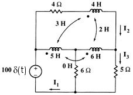

A06 FD analysis: Mutual inductances
Question. Given the following circuit, find the value of current I3 when s = - 2 Np.

Solution:
1) Label nodes and elements. Define variable cir containing circuit description. I used this description:
"e1,1,0,100*
d(t),0; l5,1,2,5,0; l6,2,3,6,0; r6,2,0,6,0; r5,3,0,5,0; r4,1,4,4,0; l4,4,3,4,0; m3,l5,l4,3,0; m2,l4,l6,2,0"à cirNotice that every inductance have been defined from the node with the dot to the node without the dot. Also notice that the 0 H mutual inductance was not defined, for it has no effect on the circuit. It is necessary to define it well in order to get right answers using the mutual inductance.
Simulate this circuit using frequency domain analysis.
sq
\fd(cir)Now ask for the current by typing, evaluating the answer when s equals -2:
ir5|s=-2
-5
Answer: The answer obtained is the right one.